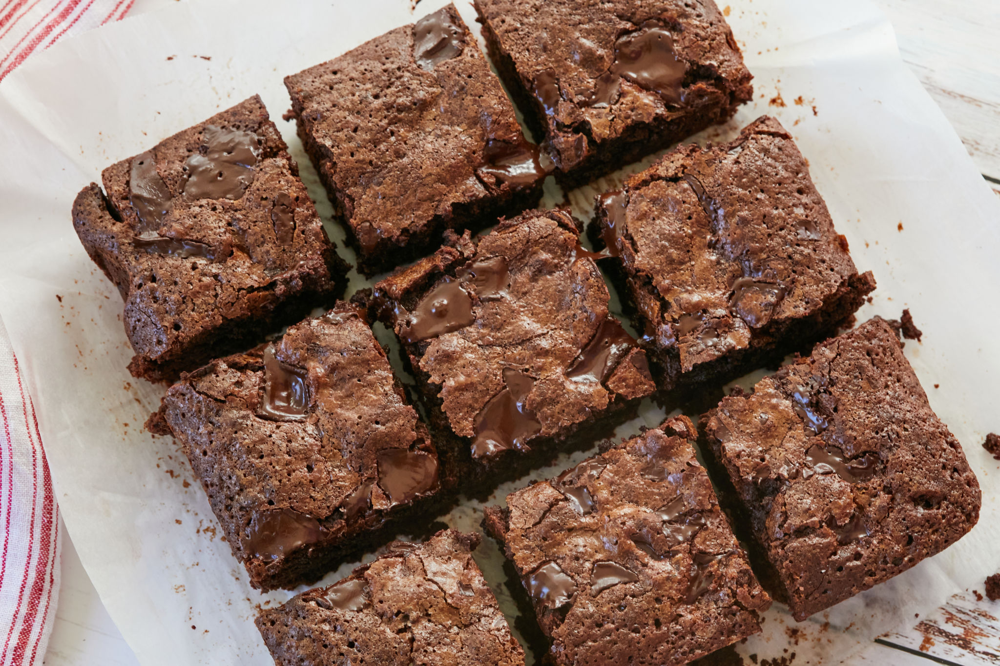

Brownies

Description
A chocolate brownie, or simply a brownie, is a chocolate baked confection. Brownies come in a variety of forms and may be either fudgy or cakey, depending on their density. Brownies often, but not always, have a glossy "skin" on their upper crust.
Ingredients
- 1 stick of butter
- 1/2 cup cocoa powder
- 1 14 oz can of sweetened condensed milk
- 1 cup powdered sugar
- 2 teaspoons vanilla
- 2 teaspoons molasses
- Pinch of salt
- 1 teaspoon baking powder
- 1 cup all purpose flower
- (optional) 1 cup chocolate chips
Steps
- Preheat oven to 325 F. Line pan with a parchment sling.
- Melt butter in mid sized pot over medium heat.
- When the butter is just browning, whisk in the cocoa powder. Let it boil for a minute then take pot off heat.
- Whisk in the sweetend condensed milk, then the powdered sugar until it's fully disolved.
- Whisk in salt, vanilla, molasses, egg, and baking powder.
- Whisk in the flour.
- Pour batter in pan and place in oven.
- Bake 30-40 min.
- Enjoy!
Back to home